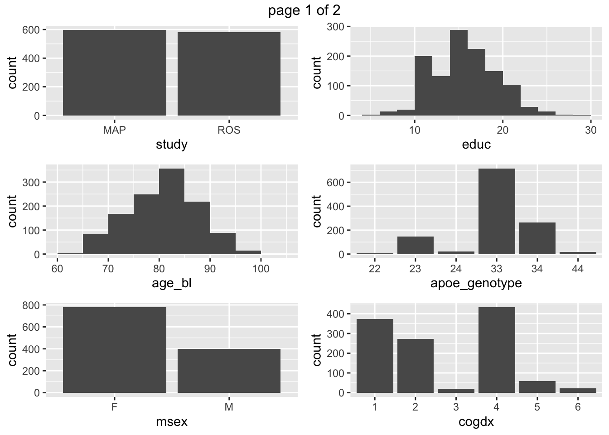
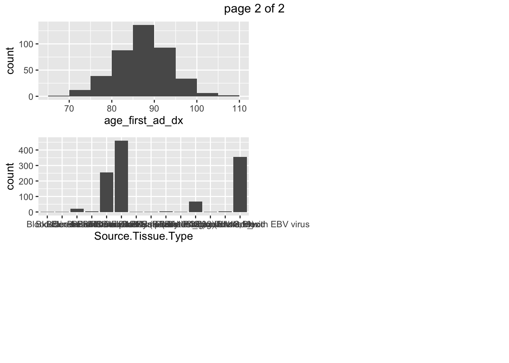

3.6 dataMaid
dataMaid: Your Assistant for Documenting Supervised Data Quality Screening in R
- generates a automatic markdown report of the dataset, of limited utility in the context of bookdown
- Running dataMaid interactivly produces lists of values, limited utility
## $study
## $study$identifyMissing
## No problems found.
## $study$identifyWhitespace
## No problems found.
## $study$identifyLoners
## No problems found.
## $study$identifyCaseIssues
## No problems found.
## $study$identifyNums
## No problems found.
##
## $age_bl
## $age_bl$identifyMissing
## No problems found.
## $age_bl$identifyOutliers
## Note that the following possible outlier values were detected: 95.72, 95.88, 96.33, 96.45, 96.93, 97.14, 97.84, 98.02, 98.25, 98.82 (3 additional values omitted).
##
## $msex
## $msex$identifyMissing
## No problems found.
## $msex$identifyWhitespace
## No problems found.
## $msex$identifyLoners
## No problems found.
## $msex$identifyCaseIssues
## No problems found.
## $msex$identifyNums
## No problems found.
##
## $educ
## $educ$identifyMissing
## No problems found.
## $educ$identifyOutliers
## Note that the following possible outlier values were detected: 5, 6, 27, 28, 30.
##
## $apoe_genotype
## $apoe_genotype$identifyMissing
## No problems found.
## $apoe_genotype$identifyWhitespace
## No problems found.
## $apoe_genotype$identifyLoners
## No problems found.
## $apoe_genotype$identifyCaseIssues
## No problems found.
## $apoe_genotype$identifyNums
## No problems found.
##
## $cogdx
## $cogdx$identifyMissing
## No problems found.
## $cogdx$identifyWhitespace
## No problems found.
## $cogdx$identifyLoners
## No problems found.
## $cogdx$identifyCaseIssues
## No problems found.
## $cogdx$identifyNums
## No problems found.
##
## $age_first_ad_dx
## $age_first_ad_dx$identifyMissing
## No problems found.
## $age_first_ad_dx$identifyOutliers
## Note that the following possible outlier values were detected: 68.93, 106.45, 107.23.
##
## $Source.Tissue.Type
## $Source.Tissue.Type$identifyMissing
## No problems found.
## $Source.Tissue.Type$identifyWhitespace
## No problems found.
## $Source.Tissue.Type$identifyLoners
## Note that the following levels have at most five observations: Blood, Blood-Cerebellum, Brain-Anterior Caudate, Brain-Frontal Cortex (BA unknown), Brain-Frontal Pole (BA10-12,32), Brain-Occipital Association Cortex (BA18,19), Brain-PCC, Brain-region unknown, lymphocytes _transformed _with EBV virus.
## $Source.Tissue.Type$identifyCaseIssues
## No problems found.
## $Source.Tissue.Type$identifyNums
## No problems found.## $study
## $study$variableType
## Variable type: factor
## $study$countMissing
## Number of missing obs.: 0 (0 %)
## $study$uniqueValues
## Number of unique values: 2
## $study$centralValue
## Mode: "MAP"
## $study$refCat
## Reference category: MAP
##
## $age_bl
## $age_bl$variableType
## Variable type: numeric
## $age_bl$countMissing
## Number of missing obs.: 0 (0 %)
## $age_bl$uniqueValues
## Number of unique values: 1100
## $age_bl$centralValue
## Median: 81.3
## $age_bl$quartiles
## 1st and 3rd quartiles: 76.17; 85.48
## $age_bl$minMax
## Min. and max.: 63.02; 102.15
##
## $msex
## $msex$variableType
## Variable type: factor
## $msex$countMissing
## Number of missing obs.: 0 (0 %)
## $msex$uniqueValues
## Number of unique values: 2
## $msex$centralValue
## Mode: "F"
## $msex$refCat
## Reference category: F
##
## $educ
## $educ$variableType
## Variable type: numeric
## $educ$countMissing
## Number of missing obs.: 0 (0 %)
## $educ$uniqueValues
## Number of unique values: 25
## $educ$centralValue
## Median: 16
## $educ$quartiles
## 1st and 3rd quartiles: 14; 19
## $educ$minMax
## Min. and max.: 5; 30
##
## $apoe_genotype
## $apoe_genotype$variableType
## Variable type: factor
## $apoe_genotype$countMissing
## Number of missing obs.: 9 (0.76 %)
## $apoe_genotype$uniqueValues
## Number of unique values: 6
## $apoe_genotype$centralValue
## Mode: "33"
## $apoe_genotype$refCat
## Reference category: 22
##
## $cogdx
## $cogdx$variableType
## Variable type: factor
## $cogdx$countMissing
## Number of missing obs.: 0 (0 %)
## $cogdx$uniqueValues
## Number of unique values: 6
## $cogdx$centralValue
## Mode: "4"
## $cogdx$refCat
## Reference category: 1
##
## $age_first_ad_dx
## $age_first_ad_dx$variableType
## Variable type: numeric
## $age_first_ad_dx$countMissing
## Number of missing obs.: 768 (65.14 %)
## $age_first_ad_dx$uniqueValues
## Number of unique values: 391
## $age_first_ad_dx$centralValue
## Median: 87.38
## $age_first_ad_dx$quartiles
## 1st and 3rd quartiles: 83.21; 91.36
## $age_first_ad_dx$minMax
## Min. and max.: 68.93; 107.23
##
## $Source.Tissue.Type
## $Source.Tissue.Type$variableType
## Variable type: character
## $Source.Tissue.Type$countMissing
## Number of missing obs.: 0 (0 %)
## $Source.Tissue.Type$uniqueValues
## Number of unique values: 14
## $Source.Tissue.Type$centralValue
## Mode: "Brain-DLPFC"